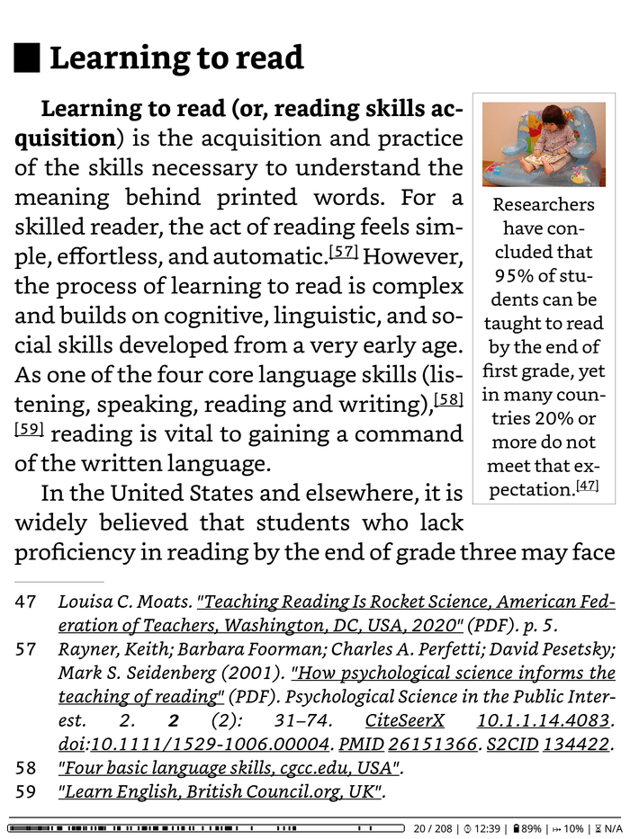

KOReader 完全上手：从零配置你的专属阅读器
本教程带你从零把 KOReader 跑起来，从安装到排版到笔记导出，跟着做一遍就能彻底摆脱 Kindle 原生阅读器的束缚。
读完这篇教程，你能把 KOReader 装上你的墨水屏设备、调出一套舒服的排版、用上夜间模式和自动色温、还能把高亮笔记自动导出到你的第二大脑。
准备工作：先确认你的设备
先提一句——koreader官网上有完整的兼容性列表和安装指南，动手之前可以对照着查一下你的设备。KOReader 不是只给某一家用的——它支持相当多平台。动手之前先判断一下：
- Kindle（Paperwhite/Oasis/入门款）：需要越狱，然后把 KOReader 扔进
extensions目录 - Kobo 全系列：最简单，把
koreader目录直接拷到.kobo隐藏目录，插上 USB 就能用 - PocketBook：装
koreader插件包，启动器里会多出一个入口 - Android 平板/手机：直接装 APK，当成普通 App 用（注意：Android 版墨水屏特性支持有限）
- Linux 电脑：有桌面版，可以直接运行体验配置
如果你是第一次接触 KOReader，我建议先用一台 Kobo 或 Android 平板试手——不用折腾越狱，几分钟就能跑起来。安装包从下载拿，解压后按你设备型号找对应子目录。
第一步：启动 KOReader 并导入书
装好之后第一次打开，你会看到一个简洁的文件管理器界面——
- 点击右上角的齿轮进入设置
- 先点「语言」，把界面切换成中文（KOReader 默认是英文）
- 点「文件管理器」，导航到你存放电子书的目录，逐个点进去导入
支持的格式非常全：EPUB、PDF、CBZ、MOBI、DJVU、FB2、TXT……几乎没有 KOReader 打不开的格式。如果你的书已经在设备里了，点「扫描」让 KOReader 一次性把所有文件编入书库。

导入完成，书库就是你的主界面了。点任意一本开始阅读。
第二步：调出一套舒服的排版
KOReader 最强的就是排版引擎——这也是它能取代原生阅读器的核心原因。打开一本书后，点击屏幕中央唤出阅读菜单，进入「文档设置」：
字号：从 16px 开始调，直到你眼睛看着不累——16~20px 是大多数人的舒适区行距：默认 1.3 偏紧，小说调到 1.5，技术书调到 1.8 或 2.0 字体：中文推荐「思源宋体」或「霞鹜文楷」，英文推荐「Crimson Pro」——KOReader 会自动识别系统字体页边距：不要贴边，每边至少留 12~15px，呼吸感很重要
点一下底部的「应用」，然后回到阅读界面感受一下。如果是 PDF 或扫描版书籍，额外启用「裁边」和「K2pdfopt 重排」——这两个功能能把扫描书的双栏排版拆成单栏，跟 EPUB 一样舒服。
第三步：夜间模式 + 自动色温，深夜再也不刺眼
白屏黑字在黑暗环境里像个小太阳。KOReader 的解决方案分三层，按需组合：
夜间模式：点击顶部菜单的月亮图标一键切换。黑底白字，1~2 秒完成，墨水屏上几乎无延迟。默认只对当前书生效——如果你想所有书都夜间模式，记得在「设备设置」里打开「全局夜间模式」。
别急着点下一步，这里有个细节：KOReader 允许你把反转后的背景色改成深蓝或深灰，比纯黑更柔和。进入「夜间模式设置 → 自定义颜色」，把背景改成 #1a1a2e 试试看。
自动色温：这是大多数人忽略的功能。它按时间曲线自动调节前光色温——白天偏冷白光、日落时逐步转暖、深夜暖黄光为主。操作：设置 → 设备 → 自动色温，按你所在时区设三个时间节点（8:00 冷 / 18:00 过渡 / 20:00 暖）。
注意：不是所有设备都支持色温调节。带可调前光的 Kobo Libra H2O、PocketBook Verse 可以直接用；只有冷暖光档位的设备（部分 Kindle）只能切三档；无前光设备夜间模式能用但色温无效。功能不支持时会被自动隐藏，不用纠结。
定时熄屏：睡前设一个 30 分钟倒计时，看完自动关灯——设置 → 设备 → 定时熄屏。
我的常用组合是：白天正常模式，傍晚自动色温接管，打开阅读就自动应用夜间模式（通过配置文件，见下文），睡前 30 分钟定时熄屏。一套流程下来完全不用手动切换。
第四步：高亮、笔记、导出——让阅读变成知识积累
阅读不是读完就算。KOReader 的笔记系统相当完整，而且能直接对接你的第二大脑。
选中文字的两种姿势：
- 默认单击选中单词（适合英文），然后拖动扩展范围
- 双击进入拖拽模式，手指拖一下就能选整段（适合中文长段落）
选中后弹出菜单，你可以选：
| 样式 | 用法 |
|---|---|
| 荧光笔（半透明） | 标注关键词、好句子 |
| 下划线 | 强调 |
| 删除线 | 划掉不认同的观点 |
| 波浪线 | 存疑、有疑问 |
选好样式自动保存。想加笔记？选中后选「添加笔记」，KOReader 会弹出内置的拼音键盘——专为中文用户设计，打拼音显示候选字，墨水屏上打字比软键盘高效得多。
导出到笔记应用是重头戏。KOReader 支持直接同步到 Joplin、Readwise、Memos、Flomo、XMind，配置完保存就自动同步，不用手动导出。以 Joplin 为例：
- 在 Joplin 桌面端开启 Web Clipper 服务（端口 3000）
- KOReader 里点「导出插件 → Joplin」，输入 Joplin 给你的 Token
- 保存，之后每次高亮或写笔记都会自动推送到 Joplin
如果你用 Obsidian、Logseq、Notion，选 Markdown 格式导出——KOReader 会生成一个 .md 文件，直接丢进你的 vault 就能用，还带回链定位到原文页码。笔记导出的详细插件配置在koreader文档里有完整步骤，Joplin、Readwise、Flomo 都覆盖到了。

第五步：配置文件——一劳永逸的自动化
做到这里你可能觉得挺不错，但 KOReader 还有更狠的：配置文件系统。
不同类型的书需要不同的排版——小说字号 18 行距 1.5 夜间模式，PDF 论文字号 20 行距 2.0 裁边，漫画翻页方向右到左图像预处理。如果每次换书都手动调一遍，很快就烦了。配置文件就是帮你自动化这个过程的。
操作三步走：
- 打开一本小说，把排版调到满意（字号 18、行距 1.5、字体思源宋体、夜间模式开）
- 进入文档设置 → 配置文件 → 保存当前设置为配置文件，命名「小说默认」
- 绑定规则选「按 .epub 扩展名」，保存
之后你任何时候打开 EPUB，KOReader 自动套用「小说默认」——换 PDF 自动用你另设的 PDF 配置，换漫画自动切右到左翻页。层级叠加：全局默认 → 按扩展名 → 按目录 → 按单本书 → 当前手动调整，高的覆盖低的，灵活得很。
进阶玩法：为 Books/睡前读物/ 整个目录绑一个配置文件，自动开启夜间模式 + 暖光色温，睡前从这个目录拿书就不用调了。
常见卡点
Kindle 越狱失败？
不是所有 Kindle 都能越狱。Paperwhite 3（KPW3）及以前型号成功率较高，KPW4/Oasis 2 之后基本没戏。如果你的 Kindle 越狱不了，直接买个 Kobo Libra 2——原生支持 KOReader，安装简单到几分钟搞定。
PDF 文字选不中、高亮不了？
这是 PDF 本身的问题——扫描版 PDF 没有文字层，KOReader 识别不到文字自然没法高亮。解决方法是开启「K2pdfopt 重排」把扫描版重排成可编辑文本，或者换用「图像标注」功能直接在页面上圈画。
导出到 Joplin 没同步？
按这个顺序排查：Joplin 桌面端是不是开着、Web Clipper 端口是不是 3000、Token 是不是抄对了、KOReader 和 Joplin 是不是在同一个局域网。90% 的情况是 Joplin 忘了开或者 Token 复制时丢了几个字符。
进阶一句话
KOReader 的深度玩法远不止这些——用户补丁可以替换 Lua 模块改渲染逻辑、手势自定义可以把双击/长按绑成任意动作、书籍地图鸟瞰全书一眼找到笔记位置。等你把上面五步跑通了，会发现 KOReader 能调的参数比你想象的多得多。
这套资料我在三个仓库都放了副本，开源项目嘛多点备份总没坏处。GitHub主力维护、Gitee国内访问快、GitCode用来做灾备，内容是同步维护的。